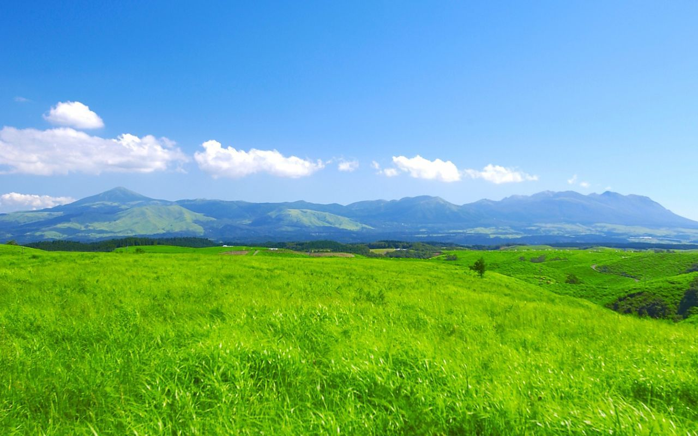

ステージ１ 草原
概要
このステージは、だだっ広い草原だ。緑の草がたくさん生えている。昼食を食べた後にここで寝るととても気持ちがいいだろう。幸いなことに、ここにはそれほど強いモンスターは現れない。弱いモンスターをたくさん倒して経験値を稼ごう。
デスモグラ
草原の真ん中に、地下へ通じるトンネルがある。そこを進んで行くと、デスモグラのテリトリーがある。このテリトリーに入ると、怒ったデスモグラの集団が襲いかかってくるので、その前にHPを回復し、装備を整えておこう。準備が整ったら、いよいよデスモグラとの戦いに挑もう！
ボス戦
草原の奥の方に進むと、原発事故で漏れ出た放射線の影響で巨大化し、凶暴化したトムソンガゼルが現れる。トムソンガゼルは普通は草食だが、この放射線を浴びて突然変異を起こしたトムソンガゼルは肉食だ。このトムソンガゼルはとても素早いので、動体視力のレベルが低いと動きを目で追うことができない。動体視力のレベルを最低５まであげておこう。トムソンガゼルは炎タイプに弱いので、前の村で火炎放射器を必ず買っておこう。